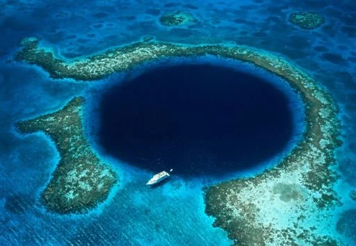
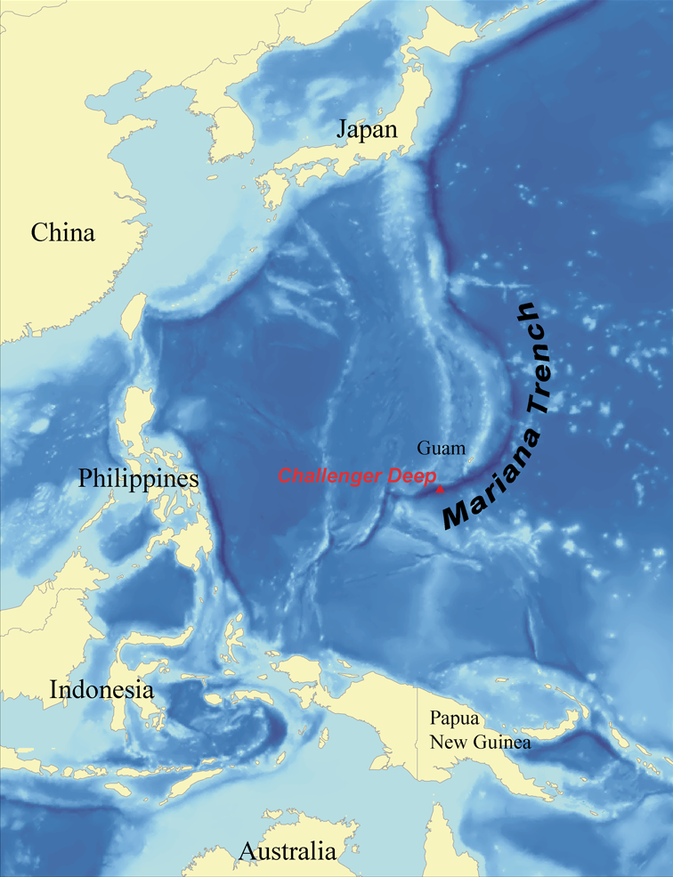

O Portal do Abismo
1. A Cicatriz do planeta
A Fossa das Marianas não é apenas profunda — ela é um registro vivo da força brutal que molda o planeta há bilhões de anos. Situada no Oceano Pacífico Ocidental, próxima às ilhas Marianas, essa estrutura geológica representa um dos limites mais extremos entre placas tectônicas. Ali, o fundo do oceano literalmente desaparece, sendo engolido pela Terra.
Esse fenômeno ocorre por meio da subducção, um processo onde uma placa tectônica mais densa (no caso, a Placa do Pacífico) mergulha lentamente sob uma placa menos densa (Placa das Marianas). Mas esse “mergulho” não é suave — é uma colisão contínua, lenta e inevitável, que gera terremotos, vulcões submarinos e deformações na crosta.


2. A Jornada Vertical
Para entender a magnitude desse lugar, imagine virar o Monte Everest de cabeça para baixo. O pico mais alto do mundo não chegaria sequer perto de tocar o fundo; ainda faltaria mais de 2.000 metros de água sobre ele. Enquanto a luz do sol desaparece completamente aos 1.000 metros (a Zona de Meia-Noite), a jornada na fossa continua por mais dez quilômetros de escuridão absoluta e temperaturas próximas ao congelamento.
| Fator | Valor aproximado |
|---|---|
| Pressão | 10.900 a 11.000 metros |
| Pressão | Mais de 1.100 vezes a pressão ao nível do mar |
| Temperatura | Entre 1°C e 4°C |
| Luz | Total ausência (escuridão absoluta) |
| Oxigênio | Mutio baixo |
O Challenger Deep
No extremo sul da fossa encontra-se o Challenger Deep, o ponto mais profundo já medido. Chegar aqui é um feito mais raro do que caminhar na Lua. Desde a primeira descida em 1960 pelo batiscafo Trieste, pouquíssimas expedições humanas ousaram desafiar o fundo. É um deserto de sedimento fino e cinzento, onde o tempo parece ter parado, servindo como o santuário final do isolamento terrestre.